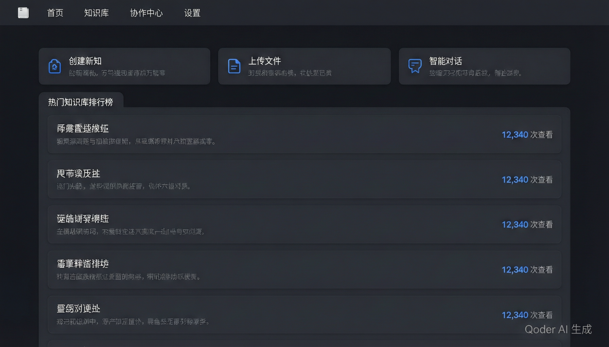
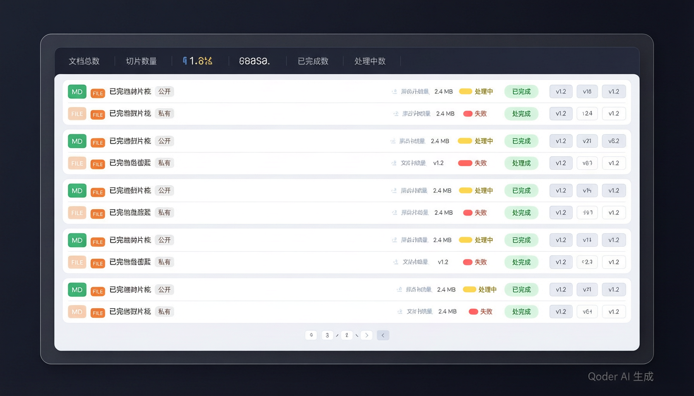
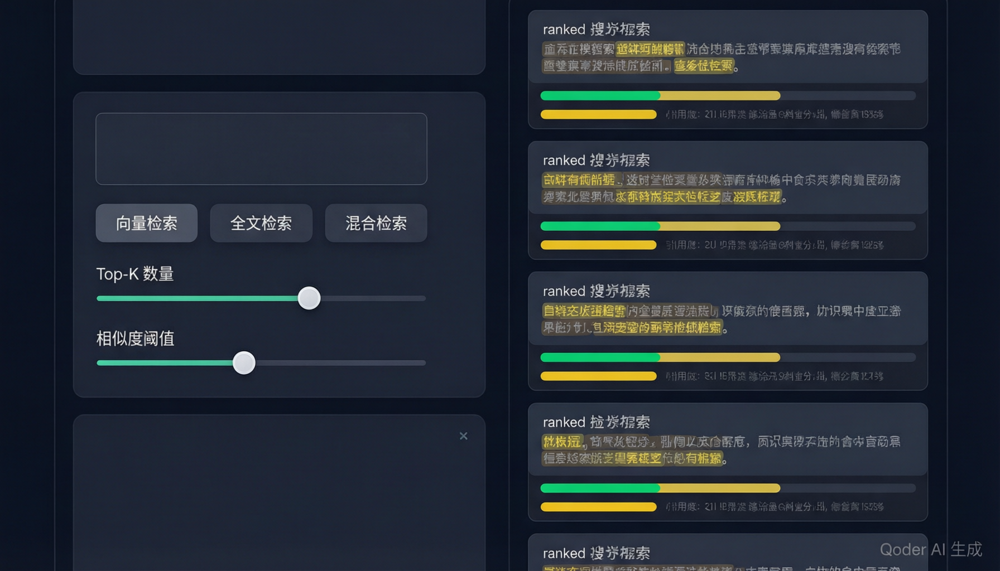
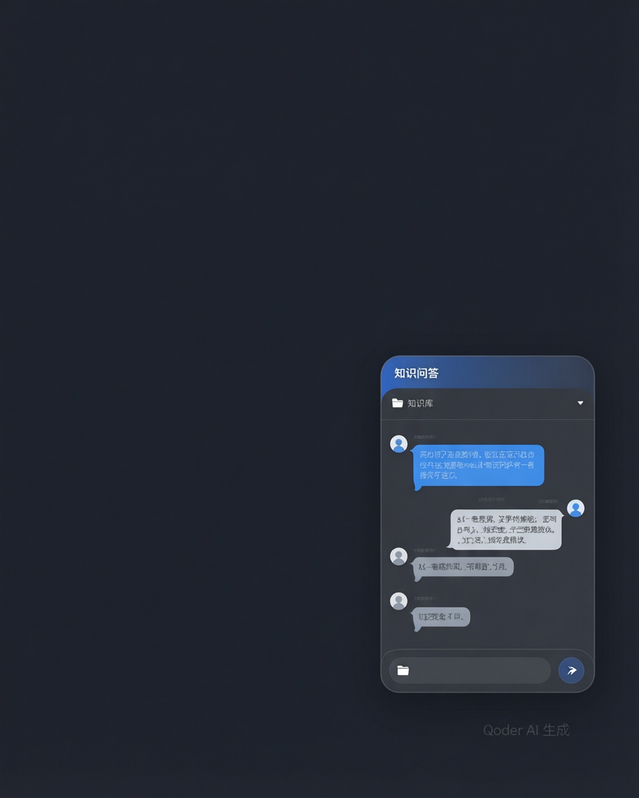

融合 RAG 检索增强生成技术，让企业知识沉淀焕发新生。
从文档管理到智能对话，一站式解锁知识价值。
在信息爆炸的时代，如何高效管理、检索和利用企业知识资产？「知源」应运而生——这是一个基于 RAG（检索增强生成）架构的企业级 AI 知识管理平台，涵盖知识库管理、文档处理、智能检索、AI 对话等核心能力，帮助团队将散落的知识系统化，让每一次提问都能精准触达所需信息。
登录系统后，首先看到的是精心设计的工作台。顶部三张快捷卡片让你可以一键创建知识库、上传文档或开启对话，无需在菜单中反复寻找。

下方内容区采用标签页设计，将「热门知识库」「热门文档」「最近文档」三个维度整合在同一张卡片中。热门知识库按浏览量排序，展示创建者、文档数量和浏览次数；热门文档同样按热度排列，标注所属知识库和创建者；最近文档则显示处理状态标签（解析中、向量化、已完成等），方便跟踪文档处理进度。每个列表底部都有「查看更多」入口，可跳转到对应的探索页面。
知识库是知源的核心组织单元。在知识库管理页面，顶部四张统计卡片展示总数概览：知识库总数、文档总数、分块总数和公开知识库数量，帮助你快速掌握平台规模。
每个知识库以卡片形式呈现，包含名称、描述、公开/私有标签、文档数、分块数和浏览量。卡片支持三种操作：编辑基本信息和检索参数（Top-K、相似度阈值）、直接发起检索测试、或者删除知识库。点击卡片主体则进入该知识库的文档管理页面。
每个知识库可以独立配置 Top-K（返回结果数量，1-50）和相似度阈值（0-1），让不同场景下的检索精度各得其所。例如，客服场景可以设置较高的 Top-K 以覆盖更多可能答案，而技术文档检索则可以提高相似度阈值以确保结果精准。
创建知识库同样简单——支持名称、描述、公开/私有可见性设置，以及默认的检索参数配置。支持按名称搜索和「仅显示公开」筛选，在大量知识库场景下快速定位目标。
进入某个知识库后，就来到了文档管理页面。这里支持两种文档创建方式：在线编写 Markdown 文档（内置可视化编辑器），或者直接上传文件（支持多文件批量上传）。上传后的文档会自动进入处理流水线：解析 → 分块 → 向量化 → 入库，全程状态可追踪。

文档列表展示丰富的信息：类型标签（MD/文件）、标题、公开状态、处理状态（待处理/解析中/分块中/向量化/已完成/失败）、分块数、文件大小、版本号和更新时间。对于未完成的文档，可以一键触发重新索引。Markdown 文档支持在线编辑和预览，编辑完成后点击「发布」即可重新触发索引流程。
内置 Vditor 富文本编辑器，支持所见即所得的 Markdown 编辑，包括标题、列表、代码块、表格、引用、图片上传等。编辑完成后一键发布，系统自动完成文档解析、智能分块和向量化入库。
探索页面是整个平台的「知识广场」，汇聚了所有公开的知识库和文档。页面分为两个标签页：知识库和文档。
知识库标签页以卡片网格展示所有公开知识库，每张卡片包含首字母彩色图标、名称、描述（两行截断）、创建者、文档数和浏览量。文档标签页则以列表形式展示所有公开文档，标注类型、所属知识库、创建者、浏览量和分块数。两个标签页均支持服务端分页，每页 10 条，确保在海量数据下的流畅体验。点击任意卡片即可直接跳转到对应的文档列表或文档详情。
检索测试页面是调优检索策略的利器。左侧配置区支持输入查询文本、选择检索模式（向量检索、全文检索、混合检索）、设置 Top-K 和相似度阈值。右侧实时展示检索结果，包括排名、文档标题、相似度百分比、可视化进度条和分块内容。

结果区顶部有统计摘要栏，展示结果数量、平均相似度、最高分、最低分和耗时。每条结果的相似度用颜色编码：绿色（≥80%）表示高度相关，黄色（≥60%）表示中度相关，红色（<60%）表示相关度较低，帮助快速判断检索质量。还支持查询历史记录（最近 10 条）和结果导出（JSON 格式复制到剪贴板），方便调试和对比不同参数下的检索效果。快捷键 Ctrl+Enter 可一键执行检索。
浮动对话面板是知源的核心交互入口。点击右下角的悬浮按钮即可唤起，面板支持拖拽和缩放，不会遮挡工作台内容。对话基于 RAG 架构——当你提问时，系统会先从知识库中检索相关片段，再将这些片段作为上下文交给大语言模型生成回答，确保回答有据可依。

输入区域的知识库选择器是一个精巧的设计：点击文件夹图标弹出知识库列表，选择后以标签形式显示在输入框上方，点击标签上的关闭按钮即可切回「全部知识库」。切换知识库会自动重置对话，确保上下文干净。对话支持流式输出，AI 回答逐字呈现并带有光标闪烁动画，等待时显示三点跳动指示器。
每条 AI 回答下方都会展示引用的来源文档标签，所有引用经过去重处理。点击标签可以跳转到对应文档，让你可以验证信息的原始出处，避免 AI「幻觉」带来的困扰。
对话历史面板可以折叠收起，列出所有过往对话的标题，点击即可加载历史消息。支持新建对话和删除历史对话，方便管理不同的问答场景。
系统设置页面将底层配置分为四大模块，以卡片形式组织：
所有配置修改后点击底部「保存全部设置」即可生效。系统入口位于右上角用户头像的下拉菜单中，保持界面整洁的同时确保配置触手可及。
登录页面支持三种认证方式：密码登录、短信验证码登录和注册。页面设计简洁大气，品牌标识和标语清晰醒目，右上角提供深色/浅色主题切换。表单具备完善的校验逻辑——必填项检查、密码一致性验证、手机号格式校验，注册成功后自动切换到登录模式。
整个系统全面支持深色和浅色两种主题模式，切换即时生效，覆盖所有页面和组件。浏览器标签页的 Favicon 也采用了品牌专属设计——蓝色渐变圆角方块搭配「知」字，与系统名称「知源」呼应。
知源采用前后端分离架构。后端基于 NestJS + Prisma + PostgreSQL（pgvector），提供 RESTful API 和 SSE 流式响应；前端基于 Vue 3 + Vite + Element Plus + Pinia，构建响应式单页应用。向量检索使用阿里云 DashScope text-embedding-v3 模型（1024 维），支持向量检索、全文检索和混合检索三种模式。文档处理流水线涵盖文本解析、智能分块、向量化和索引入库全流程。